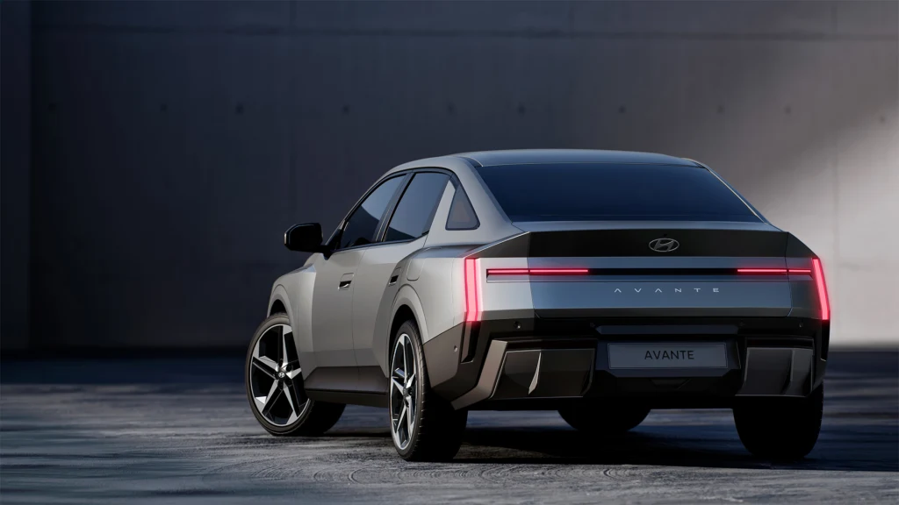
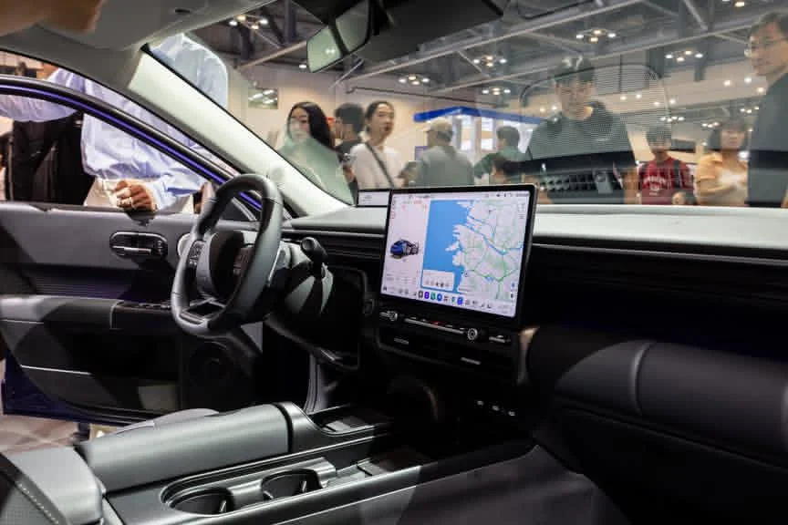
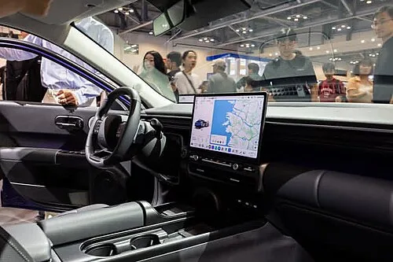
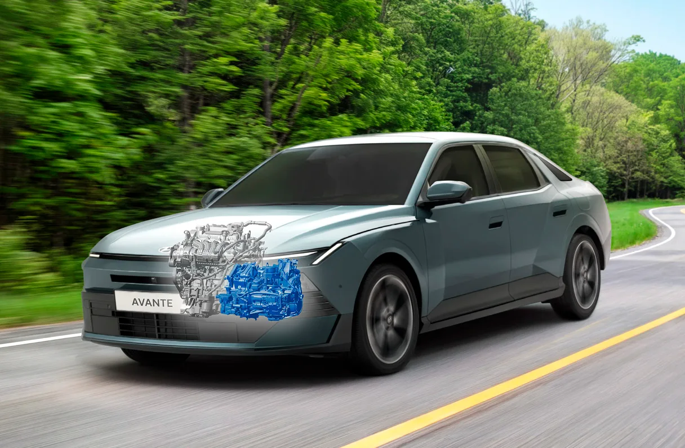
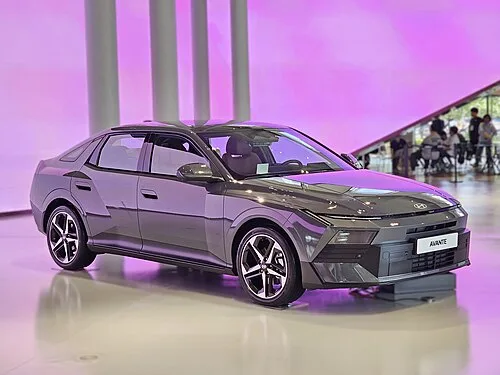

▲ 8세대 디 올 뉴 아반떼 전면. H-엣지 라이팅과 아트 오브 스틸 디자인 언어가 적용됐다. 사진=현대자동차
오토헤럴드가 8세대 디 올 뉴 아반떼 하이브리드를 직접 시승한 결과에 따르면, 이번 아반떼는 이전 세대와 체급 자체가 다르게 느껴진다. "이게 준중형 맞나?"라는 시승기 제목처럼, 몸집을 키운 차체와 새로워진 하이브리드 파워트레인이 맞물리면서 준중형 세단 특유의 가벼운 존재감을 벗어났다는 평가가 나온다. 카프리즘은 오토헤럴드의 시승 결과와 함께 헤럴드경제·모터피디 등 국내 매체들이 같은 차체·섀시를 공유하는 신형 아반떼를 몰아본 기록을 더해, 실제 주행에서 무엇이 달라졌는지 정리했다.
커진 차체가 만든 첫인상, 디자인·외관
8세대 아반떼는 전장 4,765mm, 전폭 1,855mm, 휠베이스 2,750mm로 7세대보다 각각 55mm, 30mm, 30mm 커졌다. 현대차의 새 디자인 언어 '아트 오브 스틸'이 처음 적용된 양산차로, 전면부는 H자를 그리는 얇은 LED 주간주행등이 헤드램프를 대신하듯 가로로 길게 뻗어 있다. 오토헤럴드는 시승기에서 이 차체 확대를 두고 "준중형이 맞나 싶을 정도"라고 표현했는데, 실제로 나란히 세워두면 쏘나타 초기형과 큰 차이가 느껴지지 않는다는 것이 공통된 반응이다.

▲ 후면부는 좌우 테일램프를 하나로 잇는 풀 LED 바가 특징이다. 사진=현대자동차
후면 역시 좌우 테일램프를 가로로 연결하는 풀 LED 바 디자인을 택해 최근 현대차 SUV 라인업에서 먼저 선보인 문법을 세단에 그대로 옮겨왔다. 헤럴드경제 시승기는 이 차체 확대가 단순히 수치상의 변화에 그치지 않고, 실제 주행 중 안정감으로 이어진다고 짚었다. 다만 오토헤럴드가 시승 영상에서 다룬 시승차는 가솔린 2.0 트림(최고출력 149마력, 복합연비 최고 14.3km/L) 기준이며, 하이브리드 모델의 세부 제원은 오토트리뷴 등의 자료를 통해 별도로 확인했다.
실내·인포테인먼트, 쓰기 편한 공간이 됐나
실내에서 가장 먼저 눈에 띄는 변화는 현대차의 차세대 인포테인먼트 시스템 '플레오스 커넥트'다. 트림에 따라 14.6인치 또는 12.9인치 센터 디스플레이가 탑재되고, 계기판은 9.9인치 슬림 디스플레이로 마련된다. 기본형에서는 이 계기판이 35만 원 선택 사양으로 빠지는 점은 이미 카프리즘이 별도로 다룬 바 있다.

▲ 대형 센터 디스플레이와 물리 공조 버튼을 함께 남긴 실내. 사진=현대자동차
모터피디 시승기는 실내 활용성에서 특히 무선충전 트레이를 호평했다. "공간이 넉넉하고 세로로 넣을 수 있어 활용이 편리했다"는 평가로, 폰을 눕혀 넣던 이전 세대 대비 실사용성이 개선됐다는 것이다. 공조 버튼은 터치식 대신 물리 버튼을 그대로 남겨 주행 중 조작 편의성을 확보했다. 최상위 인스퍼레이션 트림에는 스피커 12개짜리 뱅앤올룹슨 사운드 시스템이 선택 사양으로 들어가는데, 모터피디는 "명확히 더 풍성하고 명료한 사운드"라고 표현했다.

▲ 운전석에서 바라본 실내. 센터 디스플레이와 다이얼식 기어 노브, 물리 공조 버튼이 눈에 띈다. 사진=Wikimedia Commons(2027 Hyundai The All New Avante Interior, CC BY-SA)
주행감·핸들링·정숙성, 체감은 얼마나 달라졌나
정숙성은 시승기들이 공통적으로 꼽는 개선 포인트지만, 평가는 매체마다 조금씩 갈린다. 흡차음재 확대와 실링 구조 보강이 맞물리면서 저속 구간에서는 엔진 존재감이 크게 부각되지 않고, 진동 억제 수준도 이전 세대보다 개선됐다는 것이 공통된 인상이다. 다만 헤럴드경제 시승기는 "전체적으로 진동은 상당히 잘 잡았지만" 고속에서의 풍절음만큼은 "준중형 세단의 한계를 벗어나기 어려웠다"고 짚었다.
승차감은 커진 차체와 함께 탄탄해지는 방향으로 바뀌었다. 헤럴드경제는 차체 반응이 이전보다 깔끔하고 안정적인 방향으로 정리됐다고 평가했고, 스티어링 조작에 따른 반응도 잘 다듬어져 있다는 인상이다. 반면 모터피디 시승기는 "전방 풍절음, 측면음, 하부소음 모두 이전 세대 아반떼보다 확실히 나아졌다"며 풍절음에서도 개선을 체감했다고 밝혀, 같은 항목을 두고도 매체별 평가에 온도차가 있음을 보여준다. 핸들링과 제동은 극적인 변화보다는 기본기에 충실한 수준으로 다듬어졌다는 것이 대체적인 평가다.
하이브리드 파워트레인, 심장이 달라졌다는 말의 실체
오토헤럴드가 시승기 제목에서 "심장이 달라졌다"고 표현한 부분은 하이브리드 시스템이다. 신형 아반떼 하이브리드는 3세대 스마트스트림 1.6 GDI 엔진에 2세대 6단 DCT, 최고출력 45kW 구동모터와 1.49kWh 고전압 배터리를 조합해 시스템 합산출력 157마력을 낸다. 기존 아반떼 하이브리드보다 16마력 높아진 수치다.

▲ 3세대 스마트스트림 1.6 하이브리드 엔진과 6단 DCT가 조합된 파워트레인. 사진=현대자동차 자료 재구성
오토트리뷴이 정리한 제원에 따르면 정지 상태에서 시속 100km까지 가속 시간은 이전 대비 5.8% 단축됐고, 시속 80km에서 120km까지의 추월 가속 성능은 16.7% 향상됐다. 연비는 17인치 휠 기준 복합 21.2km/L로, 도심 21.7km/L·고속도로 20.5km/L를 기록한다. 시내 주행에서는 전기모터가 적극적으로 개입해 저속 구간 소음이 거의 없다는 것이 하이브리드 모델을 접한 시승기들의 공통된 반응이며, 신호 대기 후 출발할 때 모터의 즉각적인 토크감이 체감 가속력을 끌어올린다는 평가도 나온다. 가격은 가솔린 2.0이 2,398만 원부터, 하이브리드가 3,042만 원부터 시작한다.
경쟁모델 대비 포지셔닝, 준중형이라는 이름이 무색해진 이유
국내 준중형 세단 시장에서 아반떼의 직접 경쟁자로 꼽히던 기아 K3는 이미 단종된 상태라, 사실상 독주 체제다. 그럼에도 신형 아반떼가 비교 대상으로 소환하는 이름은 준중형이 아니라 중형급이다. 모터피디 시승기는 커진 뒷좌석 공간과 차체 크기를 두고 "아반떼가 아니라 쏘나타를 탄 듯하다"는 인상을 받았다고 적었을 정도다.

▲ 측면에서 보면 늘어난 휠베이스와 낮게 깔린 벨트라인이 두드러진다. 사진=Wikimedia Commons(Hyundai Avante 2.0 Inspiration CN8, CC BY-SA)
동급 세그먼트에서는 기아 K5가 준중형 가격대로 중형차를 노리는 파격 프로모션을 내놓으며 견제에 나섰지만, 무선충전 편의성이나 하이브리드 연비 체감에서는 신형 아반떼가 앞선다는 평가가 우세하다. 실사용 측면에서 트렁크 용량은 VDA 기준 최대 479리터로, 2열 공간을 넉넉하게 키우면서도 적재공간을 희생하지 않았다는 모터피디의 평가와도 맞아떨어진다. 전기차까지 시야를 넓히면 현대차는 2026년 9월 유럽에서 준중형 해치백 '아이오닉 3'를 새로 선보였는데, 아반떼와 같은 '아트 오브 스틸' 디자인 언어를 공유하면서도 국내 출시나 세단 세그먼트와는 거리가 있어 당장 직접 경쟁 구도로 보기는 어렵다. 결국 국내 시장에서 신형 아반떼 하이브리드의 실질적 비교 대상은 21km/L대 연비와 3천만 원 초반 가격을 동시에 제시할 내연·하이브리드 준중형이 마땅치 않다는 점에서, 당분간 사실상 홀로 뛰는 레이스에 가깝다. 실제 주행 인상을 포함한 오토헤럴드의 시승 영상과 전체 시승기는 아래에서 확인 가능하다. 오토헤럴드 원문에서 확인 가능
종합하면, 8세대 아반떼 하이브리드는 준중형이라는 체급 안에서 정숙성과 승차감을 중형차 수준으로 끌어올리면서도 21km/L대 연비를 지켜낸 모델이다. 다만 풍절음처럼 여전히 남은 체급의 한계와, 3,000만 원대 초반부터 시작하는 가격이 실구매 단계에서 어떻게 받아들여질지는 앞으로의 판매 흐름이 보여줄 부분이다.